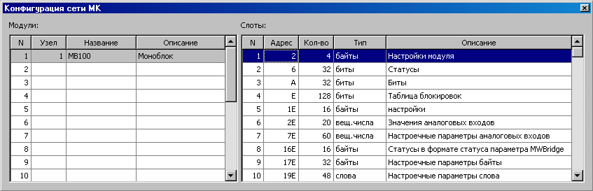

Проект MKStudio содержит:
Настройка проекта осуществляется в режиме работы MKStudio, когда не запущен информационный обмен с МК. Программа переходит в этот режим сразу после запуска или после вызова меню > . Если меню содержит пункт , то это значит, что программа находиться в нужном режиме.
Проекты MKStudio сохраняются в файлах с расширением XML. Они представляют из себя текстовые файлы, сформированные в соответствии со стандартом языка разметки XML. В файле проекта сохраняется конфигурация сети МК и вид таблицы центральной области главного окна.
Создание проекта
Новый проект создается при помощи меню > .
Загрузка проекта
Чтобы загрузить проект нужно вызвать пункт меню > . После этого, в появившемся стандартном окне выбора файла задать нужный файл проекта.
Сохранение проекта
Для сохранения текущего проекта нужно вызвать пункт меню > . При этом действии проект сохраняется в тот же файл, который был загружен ранее. Если текущий проект не имеет своего файла (т.е. проект был создан, а не загружен), то появляется стандартное окно сохранения файла. Там нужно указать имя файла, в который будет сохранен проект. Также можно сохранить проект в файл, отличный от текущего, воспользовавшись пунктом .
Сеть МК представляет собой один или несколько МК, присоединенных к ПК через последовательный интерфейс. При этом, необходимо чтобы на всех МК в пределах одной сети был задан уникальный для этой сети адрес и выставленна одинаковая скорость. Программа MKStudio позволяет работать с одной сетью МК. Настройка параметров последовательного интерфейса (имя порта, скорость и тайм-аут ответа) осуществляется в окне начального диалога сразу после запуска программы.
Модулем называется МК в составе данной сети.
Слотом называется область информационной базы модуля, содержащая массив однотипных параметров для отображения или управления.
Для того, чтобы настроить информационное взаимодействие с сетью МК нужно задать задать параметры в окне .
Окно представляет из себя две таблицы. Левая таблица (модули) содержит список всех МК сети. Правая таблица задает слоты для модуля, указанного выделенной строкой левой таблицы Таким образом, для каждого МК из таблицы cлева существует своя таблица слотов cправа.

Таблица :
| Название столбца |
Значение |
|---|---|
| Номер МК. Заполняется автоматически. При привязке используется для ссылки на данный МК. | |
| MODBUS-адрес МК в сети. Десятичное число от 1 до 127. В случае использования в сети МК подузла (например, МК серии КАМА из ПТК УМИКОН) узел задается в виде:[узел].[расширение]. Например: 2.3. Расширение должен быть десятичным числом от 1 до 15 | |
| Текстовый столбец с названием МК. Данный столбец заполнять необязательно. | |
| Текстовый столбец с описанием МК. Данный столбец заполнять необязательно. |
Таблица :
| Название столбца |
Значение | ||||||||||||
|---|---|---|---|---|---|---|---|---|---|---|---|---|---|
| Номер слота. Заполняется автоматически. При привязке используется для ссылки на слот. | |||||||||||||
| Смещение в байтах от начала информационной базы МК до начала данного слота. Задается шестнадцатеричным числом. | |||||||||||||
| Количество (длина массива) параметров в данном слоте. Задается
десятичным числом. |
|||||||||||||
Задает тип данных для параметров для данного слота (или просто тип
слота). Возможные значения:
|
|||||||||||||
| Текстовый столбец с описанием слота. Данный столбец заполнять необязательно. |
Для удаления строчки слота из таблицы нужно ввести пустой текст в поле . При установке указателя мыши на поле , во всплывающей подсказке будет показан расчетный адрес этого слота, основанный на параметрах предыдущего слота.
Центральная область главного окна представляет собой таблицу. Она служит для:
Все действия над таблицей можно последовательно отменять при помощи пункта меню > .
Все вышеописанные действия можно произвести из контекстного меню, доступного по нажатию правой кнопки мыши на нужной ячейке.
Принцип привязки состоит в том, что в данной ячейке будет отображаться не статический текст, а значение параметра из информационной базы МК в режиме реального времени. Кроме отображения возможно управление этим параметром.
Для адресации параметра в сети МК используются поля из таблиц окна . См. здесь. Параметр задается тремя числами:
Для настройки привязки используется диалог
Порядок действий для привязки ячейки:
После этого область ячеек будет выделенна специальным цветом (если не задан иной цвет фона). Значение в ячейках показывает привязку в формате:
[номер модуля]/[номер слота]/[номер параметра].
Для задания специальных настроек отображения некоторых ячеек используется окно . В нем в виде текста описываются специальные виды отображения привязанных ячеек.
Перечислитель представляет собой тип отображения, при котором различным целочисленным значениям параметра соответствуют текстовые значения. При отображении в таблице, ячейки с перечислителями будут содержать текстовые значения, а при управлении будет появляться всплывающий список значений.
Формат описания перечислителя:
enum [имя перечислителя]
{
=[числовое значение]: [текстовое значение] // [необязательный комментарий]
=[числовое значение]: [текстовое значение] // [необязательный комментарий]
...
=[числовое значение]: [текстовое значение] // [необязательный комментарий]
}
Имя перечислителя не должно содержать пробелов. Текстовое значение может быть любым, но не должно содержать обозначения комментария ( // ). Числовое значние может быть отрицательно. В обозначении числового значения пробелы не допускаются.
Например, режим работы генератора тока может быть описан так:
| Числовое значение |
Текстовое значение |
|---|---|
| 0 | Отключен |
| 1 | 1 мА |
| 2 | 5 мА |
| 3 | 20 мА |
enum Генератор_тока_режим
{
=0: Отключен
=1: 1 мА // штатный режим
=2: 5 мА
=3: 20 мА
}
При привязке ячейки таблицы в поле диалога нужно ввести имя перечислителя (в данном случае Генератор_тока_режим).